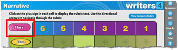
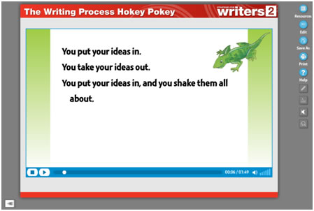

Help Screen
Contents
Key Features of the Digital Resources
| Button | Description |
|---|---|
Select the Resources button to return to the Digital Resources Home Screen. |
|
| Select the Edit button to create your own lesson playlist. This feature allows you to sequence a series of resources (e.g., games, rubrics, videos, graphic organizers, etc.) to create your own custom lesson. | |
| Select the Print button to print the screen you are currently viewing. | |
| Select the Help button to launch the Help file and get more information about this software. | |
| Select the Drawing Tools button and a palette of tools will open at the bottom of the screen. | |
Tools from left to right:
|
|
Select the Text Tool button (available for use only within the Graphic Organizers) to insert text within your graphic organizer. When you click it, the text tool palette will appear at the bottom of the screen.
|
|
| Select the Speaker button to turn the audio on or off. | |
| Select the Zoom button to enlarge a part of the screen. Once you select this button, you will use your mouse or interactive whiteboard pointer (e.g., finger, pen, or stylus) to mark a section of the screen and drag a box around it. The selected screen portion will enlarge. Select the X button to close the zoom box. | |
The Right-Left button allows you to switch the location of the tool bar from right to the left. Click on the arrow to move the tool bar left or right. |
|
Using the Anchor Papers
The interactive Anchor Papers activity offers four sets of model papers that serve as exemplars for Narrative, Informative/Explanatory, Opinion or Argument, and Descriptive writing. Each paper appears in six versions (i.e., a 6-point paper, a 5-point paper, a 4-point paper, etc.). When projected on an interactive whiteboard, the tools enable the teacher to show where and how the traits are exemplified in the paper and allow the paper to be used for group analysis. The activity defaults to the 6-point Anchor Paper, the best writing example.
| Button | Description |
|---|---|
Display different levels of the same paper by selecting the number in the upper left corner of the Anchor Paper. |
|
| For better presentation in the classroom, you can adjust the size of the font onscreen by selecting the letter buttons in the upper-right of the Anchor Paper. |
Within each anchor paper are tools available to show the six traits of writing within the writing sample: Ideas, Organization, Voice, Word Choice, Sentence Fluency, and Conventions.
| Button | Description |
|---|---|
|
Anchor Papers and the Six Traits Select the highlighter () next to the trait you wish to highlight. Select the text in the passage that you wish to mark. Select the checkmark next to the trait () to reveal examples of each trait. Select to hide your highlights. Select again to reveal your highlights again. Select to clear all highlights. This is a permanent choice, so make sure you want to delete all highlights before using. Select to open and view the rubric for each anchor paper. (See the Rubrics section of the Users Guide or the Rubrics Help screen for complete information on the functionality of this feature.) |
|  | When you’re finished using the rubric, select Close at the top left of the rubric to return to the original anchor paper. |
Using the Grammar Games
There are fifty multiple choice grammar games available for each grade level that allow students to interact with and practice important grammar, usage, and mechanics skills in a fun way. Games can be played in one-player or two-player (team) mode.
- Choose a grammar game from your home screen.
- Choose to play with one player or two teams.
- Games in one-player mode are available for a student to play independently.
- Games in two-player mode are for two students (or two teams of students) to play against one another. Teams alternate, taking turns to answer questions.
- When playing, students select their answer choice from the screen.
Using the Graphic Organizers
There are a variety of interactive graphic organizers available to help students get their writing projects started. These include:
|
|
The graphic organizers have text entry and editing capabilities that allow you to create and save customized graphic organizers to use during class discussions or presentations.
To create and save a custom graphic organizer, follow these steps: |
|
|---|---|
|
|
|
Window Shade: This feature allows you to hide areas of the screen that you will then uncover when in Presentation mode. For example, you might want to place a window shade over all the “effect” boxes in a Cause and Effect organizer.
Add Weblink: This feature allows you to add a link to any website to your screen.
Text Tool: The Text Tool in Edit Mode allows you to:
Show/Hide Tools Toggle: This feature allows you to turn on or off your onscreen edits or mark-up notes when presenting in class.
|
|
|
|
|
Using the Mini-Lessons (Presentations)
These resources are mini-lessons, presentations that focus on these key writing topics:
- Introduce the Writing Mode
- Introduce the Six Traits
- Introduce the Writing Process
- Peer Conferencing
- Grammar
These are self-running presentations made up of individual slides. You can advance each slide (or to the next interaction on a single slide) by clicking the screen at any point, or choose one of the options in the table below.
| Press . . . | To . . . |
|---|---|
Right Arrow, Down Arrow, Enter |
Go to next step |
Left Arrow, Up Arrow, Backspace |
Go to previous step |
| N, Page Down, Space Bar | Go to next slide |
| P, Page Up | Go to previous slide |
| Home (button on keyboard) | Go to the first slide |
| End (button on keyboard) | Go to the last slide |
Note: If you are running the mini-lessons while standing at the interactive whiteboard, simply select a point on the screen to move the slideshow forward one step.
Using the Proofreading Activities
Students can practice their editing and proofreading skills using these interactive proofreading activities. Proofreading activities are arranged by mode and genre. There is one proofreading activity for each chapter in the student book.
Sample Proofreading Screen
- A passage and menu of proofreading marks will appear. Students will use the mouse, a finger, or pen/stylus (whatever input device your interactive whiteboard accepts) to select and drag the correct proofreading mark to the place in the passage where the error is located.
- If a word is missing, students will select and drag the symbol to the error and a virtual on-screen keyboard will appear.
- Students may use the on-screen or the computer keyboard to type the word and then select OK.
- The keyboard will disappear, and students can continue with the activity.
- If a word is spelled incorrectly, students will select and drag the symbol to the error and a virtual on-screen keyboard will appear.
- Students may use the on-screen or the computer keyboard to type the misspelled word and then select OK.
- The keyboard will disappear, and students can continue with the activity.
- Students can use the Hint button to find an error or use the Answers button to reveal all answers. (Click this button again and the answers will disappear.)
Using the Rubrics
The 6-point rubrics that appear in each chapter in the student book are available in this interactive format, as well as the 4-point, 5-point, and 6-point mode-specific rubrics in the back of the student book. When projected on an interactive whiteboard, you can use the interactive rubrics with students to focus attention on a particular writing trait or to point out the characteristics of a 6-point paper.
Sample Rubric
- Within the rubric, click on the plus sign in each cell to display the rubric text.
- Use the directional arrows to navigate through the rubric.
- If you would like to view the complete rubric, click on the View Complete Rubric button in the upper-right of the screen.
Using the Sing-Along Songs
Six lively songs introduce students to writing and editing with playful adaptations of familiar tunes. Use the projectable lyrics with the audio for fun, sing-along, classroom activities.

| Button | Description |
|---|---|
| Stop video button: This button stops the video and rewinds it to the beginning. | |
| Play/Pause toggle button: This button alternately plays or pauses the video. | |
| Volume button: Click the bars of the volume button to either increase or decrease the volume of the video. |
Using the Writing Process Videos
The set of five short video segments present each step of the writing process—Prewrite, Draft, Revise, Edit, and Publish—through a funny, animated laptop character. Students will see the laptop guy develop a piece of writing from brainstorming and organizing initial ideas through presenting and publishing the final paper. Use the videos with students to introduce and/or review each step of the writing process.
| Button | Description |
|---|---|
| Stop video button: This button stops the video and rewinds it to the beginning. | |
| Play/Pause toggle button: This button alternately plays or pauses the video. | |
| Volume button: Click the bars of the volume button to either increase or decrease the volume of the video. |
Using the Writing Prompts
Cross-curricular writing prompts are available for each of the four modes of writing. Writing prompts are presented through an interactive Search menu. Teachers may search to find a variety of writing prompts for students and can display one prompt at a time on the interactive whiteboard for a timed or practice writing session.
- You can choose one or more of each of the modes or content areas.
- The results of your writing prompt search will be displayed in the Results box below.
- You can click on an individual writing prompt to view it full screen for better presentation in your classroom.
- Use the Clear button to clear your search and start again.
Using My Lessons
If you have created and saved customized Graphic Organizers, you can find them under My Lessons. You can also find any lesson “playlists” that you have created here.
Creating a Lesson
Use this feature to create your own lesson “playlist” using any of the available Strategies for Writers digital resources or any of your own customized Graphic Organizers. A lesson playlist is a sequence of activities, games, or graphic organizers that to you put together for instruction in class.
Follow these steps to create your own customized lesson playlist. |
|
|---|---|
|
|
|
|
|
|
|
|
|
|
|
|
Note: If you want to create a lesson playlist containing a Graphic Organizer that you have already customized, you must open the previously saved Graphic Organizer from My Lessons first and then add additional resource screens. When you are finished, select Save a copy to save as a separate new lesson.